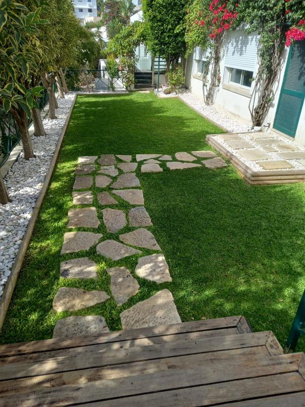
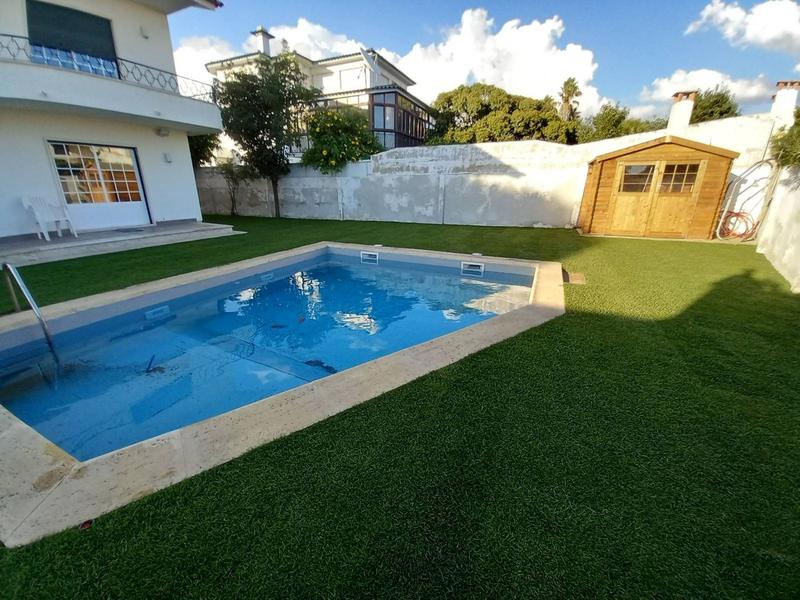
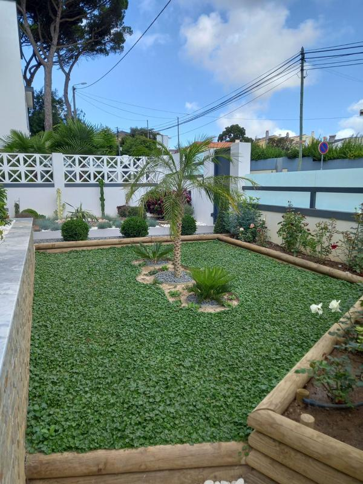
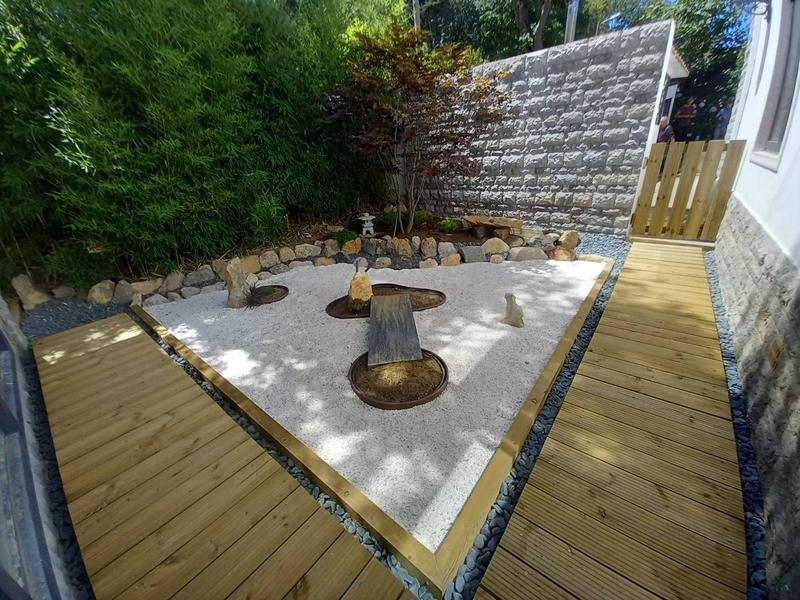

Jardins
Manutenção de jardins
Manutenção regular de relvados, canteiros e plantas: corte, fertilização e todos os cuidados que mantêm o seu jardim em harmonia.
Pedir orçamento →Jardins · Piscinas · Espaços verdes
Manutenção e criação de jardins, jardins zen e manutenção de piscinas em Sintra, Cascais, Oeiras e Mafra.
O que fazemos
Do relvado à piscina, cuidamos de cada espaço verde com harmonia.

Manutenção regular de relvados, canteiros e plantas: corte, fertilização e todos os cuidados que mantêm o seu jardim em harmonia.
Pedir orçamento →
Limpeza e manutenção regular, para manter a água e os espaços à volta da piscina em boas condições.
Pedir orçamento →
Planeamento, renovação e instalação de espaços verdes adaptados à sua casa e ao seu dia a dia.
Pedir orçamento →
Espaços que convidam à contemplação e trazem bem-estar, harmonia e equilíbrio, inspirados na cultura japonesa e na tradição budista.
Pedir orçamento →Trabalhos
Clique numa imagem para ampliar.
Como funciona
Preencha o formulário em 2 minutos ou fale connosco por WhatsApp.
Enviamos o orçamento por email, grátis e sem compromisso.
Depois de aceitar, marcamos o dia que lhe der mais jeito.
A nossa equipa cuida do seu espaço no dia combinado.
Peça o seu orçamento grátis. Respondemos por email, sem compromisso.